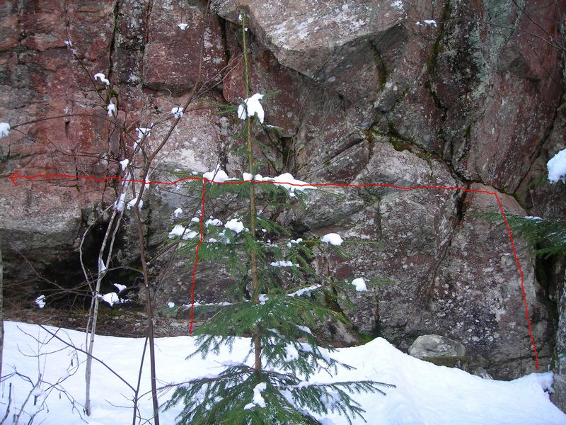
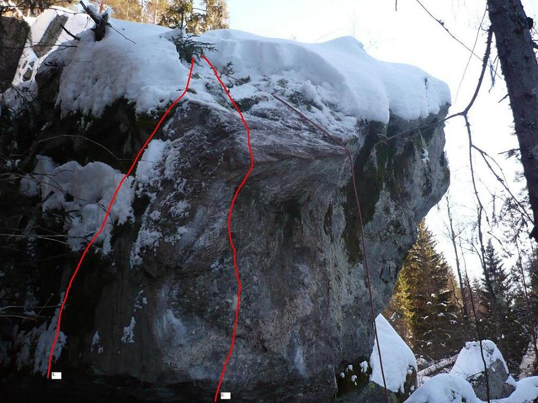
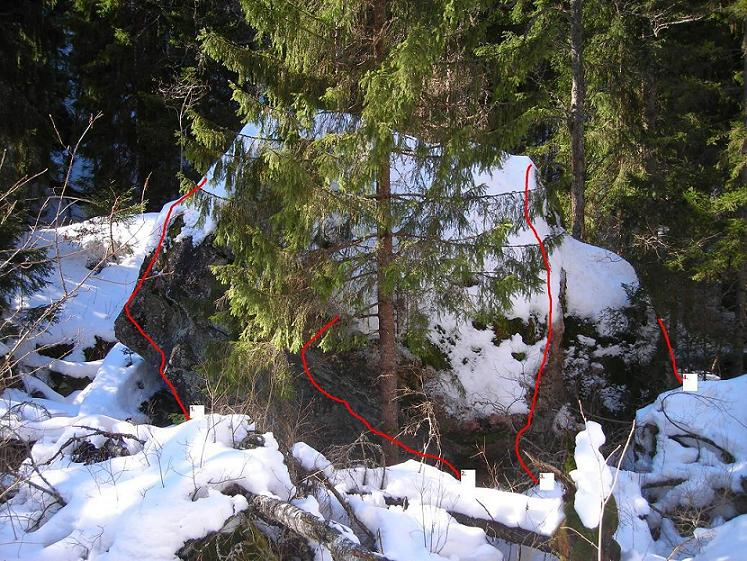
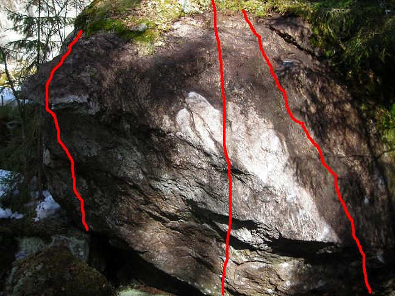
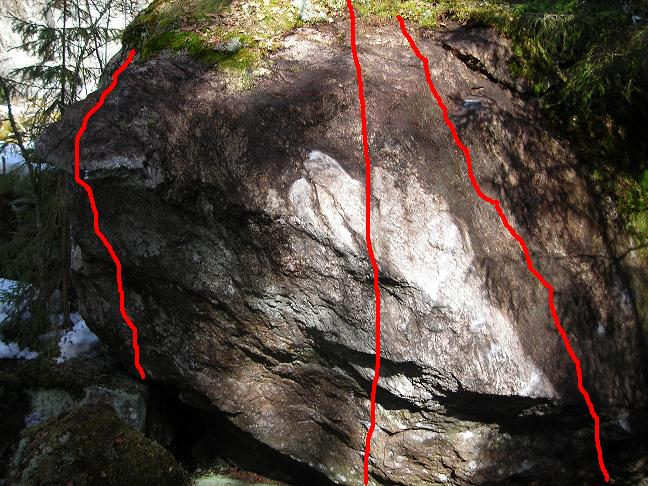
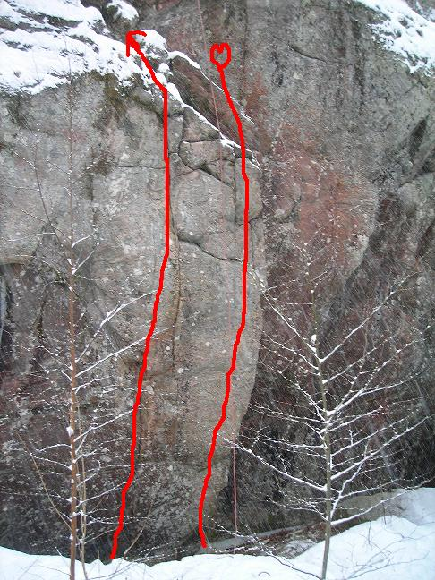

Sulvik-Boulder
Lat: 59.689948
Long: 12.428627
Allmänt
I direkt anslutning till berget i Sulvik finns det ett antal boulderproblem. Detta är dess förare.
Denna förare återfinns och är mest aktuell på
Vägbeskrivning
<div style="width: 355; float: right; margin-left: 10px; padding: 3px; border: solid 1px #cccccc;">
<googlemap width=350 height=300 lat="59.693218" lon="12.428541" zoom="10" type="map" controls="small">
59.689948,12.428627,
Sulviksberget
</googlemap>
</div>
Från Arvika:
Följ väg 172 i riktning mot Årjäng/Töcksfors/Sulvik. Efter att du passerat Sulvik med dess bensinstation/mat-affär, ta första vägen till höger mot Åmotfors. Efter ca en kilometer hittar du kolsjön på vänster sida. Då har du kört lite för långt.
Parkera istället bilen vid ängen till höger. Berget ligger i andra änden på den lilla åkern (200m) och början på berget borde ses från bilen. Vid sådd på åkern måste fordonet parkeras högre upp i backen där det finns en liten ficka. Då är det promenad över kalhygget som gäller.
Access : Vid ängen finns endast en parkeringsficka, lite vid sidan av vägen, använd aldrig vägen/ängen. All annan yta används av markägaren. Parkera helst uppe på krönet innan , eller kör vidare och parkera i skarpa kurvan på avtagsväg. Var vänlig och respektera markägarens behov.
Blocköversikt
Här ska vi lista var de olika blocken finns med en översiktsbild.
Väggproblem

Oscarväggen:
- 1
- ?
- 6a
- Travers från oskars led åt vänster
- 2
- ?
- ?
- diverse varianter rakt upp till vänster om oskars led
Familjeterapiväggen:
- 1
- Singoalla
- 6c
- Vänsterstigande travers vid familjeterapi originalinsteg , små lister till slut catch upp till startgrepp på familjeterapi
Vid uppstigningen:
- 1
- Guac
- 6c
- Enorm rampled med fostrande slut, möjlig sittstart.
- 2
- ?
- 6a
- Under uppstigningen finns en liten vägg med denna mini catch , fler problem möjliga.
Ovanför tomheten väggen
En bouldervägg placerad ovanför ängsklippan. Dvs uppe på berget. Uppstigning möjlig till vänster, mitt på samt till höger. Fina landningar i ljung.
5 problem med diverse varianter 5a till 6a
Bostadsblocket

Här ska det så småningom hamna information om Bostadsblocket och dess placering.
- 1
- ironiska glasögon
- 6a
- Till vänster om areten
- 2
- deutsch ist so verdammt schön
- 7a+
- Fin arete
- 3
- Rambo, I love you
- 6a-6b
- fin arete om man har disciplin, på den kollapsade sidan av bostadsblocket
Ett tiotal projekt till finns på detta block.
Dödsblocket


Efter bostadsblocket startar sjön/träsket och dödsblocket ligger ungerfär 40 meter bort lite åt höger, beavercreek-blocket ligger i direkt anslutning till dödsblocket.
Möjligheter till ett tiotal projekt .
- 0
- dublight
- 7a?
- Startar vid redden att vara redd -areten och går stigande vänstertravers till drown or die hyllan,pumpande.
- 1
- drown or die
- 6c
- startar nere vid vattnet och går vänster och upp genom taket , fin.
- 2
- stenografi
- 6c
- startar till vänster om drown or die och går upp genom vänsterkanten av taket till superfin arete ! Superproblem.
- 3
- Supadupaslopa
- 6b
- startar nere i ett typ hål och går vi slopig kant upp på areten till toppväggen
- 4
- Deathproof
- 4b
- fin upp och bra för att ta sig ner!
- 5
- Redden at vare redd
- 6a
- liten sczyyyzzst arete
- 6
- dä näxt läväl
- 6c
- one move wonder överhängande vägg med tung etablering/catch
- 7
- fem osthyvlar
- 6a
- på andra sidan av blocket , väggproblem
Lägerplatsblocken


När du har kommit in i skogen , så kommer du att gå rakt på blocken, can't miss.
- 1
- ?
- 6a
- rakt upp för svaet
- 2
- ?
- 5c
- Rakt upp för svaet, höger
- 4
- ?
- 6c
- nästa block åt höger sittstart på crimpers
- 5
- ?
- 5b-5c
- vänsterstigande travers, grad beror på diciplin
- 6
- ?
- 4c-6a
- vänsterkanten 4c-6a
- 8
- påhlmans arete
- 6b+
- På stora skivblocket, innanför lägerplatsblocken,framför stora väggen. Killer-arete !!
Beavercreek-blocket


Olika sidor har olika karaktär. Den lätt överhängande har mycket catchvänlig kant och utmärkt landning. Dessvärre finns inga grepp. En handfull projekt går att etablera på stenen.
- 0
- B.R.A.T.S
- 6c+
- till höger om vänsterareten,sittstart kommer snart!
- 1
- lösning nr 1
- 7a+
- vidrigt crimpmove lättaste på hela väggen
- 2
- I wanna jump like daniel
- 7a+
- Med inspiration från Europa så gick det äntligen .
- 3
- Högerareten
- 6b
- På hörnet till höger om den greppfattiga överhängande delen. Upp för areten. Rolig.
- 4
- Vänsterareten
- 6c
- På hörnet till vänster om den greppfattiga överhängande delen. Upp för areten. magnifik.
- 5
- Vänsterareten,bäcksidan
- 5b
- bra uppvärmning
- 6
- bäcken i väggen
- 5c
- bäcksidan,bra uppvärmning
Närvaroblocket
Blocket ligger längst bort, och har möjlighet till fler problem.
- 1
- Ryggknäckarn
- 6b
- ståstart påvänstra sidan av ö.h. vh kant hh kass kristallkant, catch till kanten och upp , padda stenen under! möjlig sittstart
- 2
- obligatorisk närvaro
- 7a
- catch, tekniskt klurig.
- 3
- Markus sva
- 6a
- sittstart.
 

Boulderleder

Kategori:Värmland
Kategori:vertikalt
Kategori:bouldering
Kategori:överhäng
Kategori:sva